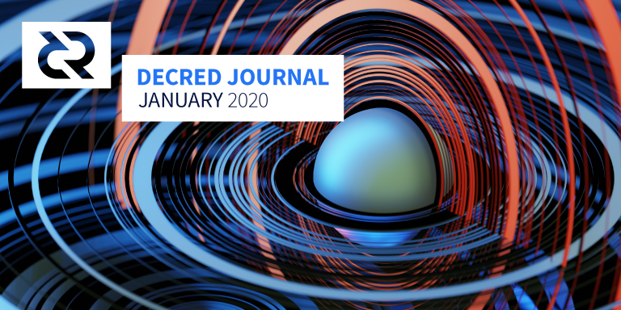

Decred月报 - 2020年1月

图片: Event Horizon by @saender
一月份亮点:
- 发布了1.5.1版的Decred节点和钱包软件，包含一些Bug修复和新功能。
- Politeia在这段时间内表现活跃，新提交了6项提案，其中5项已经完成投票。
- DCP0005的共识规则更改投票顺利完成，支持率> 99％。
- 全球活动和社区聚会的正在进行，以纪念2月8日Decred创世块4周年。一些团体于2月6日举行庆祝活动。Stakey的手提袋已准备好进行一场旋风般的全球巡回演出。
请投出你的选票！
为能使DCP0005共识更改稳步进行。在活跃的61％选票中，有99.94％的投Yes，其余39％的人弃权。
目前大约还有1周的截止时间。如果你有一个偏好，请在你的个人和/或VSP投票钱包配置它。
v1.5.1版本
v1.5.1修复了v1.5.0中的Bug，并添加了一些功能。
dcrd：经过身份验证的RPC WebSocket客户端修复了内存泄露问题。这对于涉及具有大量地址的钱包设置尤其重要。
dcrwallet：固定地址重用错误，可能由网络同步重新启动（例如，失去与dcrd的链接时），选票购买者中产生的错误（可能会将更改发送到错误的帐户）以及其它一些Bug。新功能包括auditreuse命令和createrawtransaction可在SPV同步模式下使用的能力（即，无需运行dcrd）。
Decrediton：修复了行为故障单的错误显示，更改生成期间的空白以及一些UI问题。QR码已识别了在中心的Decred标志。
可在发行说明页面上找到完整的发行说明和下载选项。与往常一样，请在安装前验证二进制文件。
开发进展总结
dcrd: 除了现有的 systemd 和 SMF 配置之外，还添加了OpenBSD rc.d的服务脚本。HTTP播种器支持已添加到 dcrseeder 和 dcrd 中。由于此通用加密API遇到实际问题，因此删除了该软件包。通过专门针对secp256k1的实现并对其进行修改，使Nonce生成得到改进和优化，以使签名在出现返回的随机数导致无效签名的极不可能的情况下不再失败。
dcrwallet: v1.5.1版本修复了多个Bug。
Decrediton: v1.5.1版本修复了许多Bug以及UI增强。
继续进行重构工作以利用分层状态机。
Politeia: CMS的Decred贡献者管理组件（DCC）已启动，并开始处理事项。CMS收到了许多修复程序和UI增强功能建议。
继续进行CMS UI 重新设计并将暗模式添加到Politeia的模式中。
dcrstakepool: v1.5.0已发布。此版本包含自v1.2.0（2019年9月）以来完成的所有开发工作。自那时以来，已有7个贡献者生成并合并了37个请求。更改包括较小的GUI增强功能，改进的HTTP请求日志记录，简化了现有代码以及各种Bug修复。有关更改和升级路径的完整列表，请查看发行说明。
提出了一种用于删除VSP帐户的高级设计 ，该设计还可以从VSP选票交易中删除手续费，从而使solo和VSP的Staker都可以购买相同匿名集的混合选票。
dcrpool:完成了大型重构，以分离组件并促进增加测试范围。
dcrlnd: Bug修复和文档改进。Docker示例完成了使用docker-compose自动化simnet环境的部署。在Medium上发布了测试Decred LN的初学者指南。
继续将上游更改移植到最新发布的 v0.9.0-beta版本。移植的变更集包括503次提交，这些提交增加37000行代码并删除11000行代码。
cspp: Bug修复和代码维护。Go的内部chacha20软件包的副本已被删除，以支持最近发布的公共API。
dcrdex: 完成了更多的构建模块。亮点：客户端DCR交易钱包，基于客户端bbolt的数据库，支持通过浏览器进行客户端访问的客户端web服务器，初始核心客户端应用程序，客户端应用程序框架，通过Web界面的新DEX账户的客户端注册，服务器应用程序配置和资产驱动程序系统，实现64位Mersenne Twister PRNG。
又是一个繁忙的开发月份：总共合并了27个拉取请求，添加22000行以及删除了4000行代码。
dcrandroid:还原钱包页面上的布局已得到改进。
在Android和iOS应用之间共享的dcrlibwallet移动库得到了许多Bug修复，并已升级到dcrd和dcrwallet的v1.5.0版本。
dcrios: UI增强和性能优化。概述页面UI清理和同步改进，多钱包优化，向dcrlibwallet的多钱包功能的初步迁移，切换到dcrlibwallet的配置存储。为密码/PIN设置，种子备份和种子还原功能实现了新的UI 。
dcrdata: 较小的修复和UI改进。
tinydecred: RPC客户端已添加，到目前为止已实现了大多数命令。添加了一个按钮来删除丢失和过期的票证。数据库经过重新设计以支持自定义编码，批处理插入，名称空间等。将 测试覆盖率提高到〜73％。重组项目使其可打包。
docs: CLI的dcrlnd命令和参数 已记录。对于安装说明Trezor分别在Decrediton添加。阅读清单已添加到“入门”部分，其中包含精选的文章，播客，视频和其他材料（基于Ditto的教育资源存储库）。BLAKE-256已得到很大扩展，以解释为什么选择。词汇表中添加了两个新定义（硬币类型和HD钱包）。
decred.org: 更新了贡献者，进行了清理。
一月份的开发活动统计：分布在17个存储库中的246个活动PR，210个主提交，增加58000行和删除25000行代码。每个存储库贡献了3-6个开发人员。
人员
欢迎使用新的贡献者，他们的代码已合并到主库中：@termoose(dcrlnd)和@pablito(dcrweb)。
祝贺通过新的CMS流程获得了Decred 贡献者：@bgptr（开发），@teknico （开发）和@decreddragon（营销）。
以下人员已从活跃贡献者列表中删除：Leslie Ankney，Elizabeth Elizabeth Bagot，Margaret Huang，Milvian Prieto，Denys Zayets，Tim Hebel，Phillip Conrad，Justin Santoro和Bill Xing。谢谢您所做的一切！
该贡献者页面定期更新，以列表的人谁是目前正在建设Decred。这样做的结果是，删除不活动的参与者后，网站上不会保留他们为该项目工作的记录。为了解决这个问题，已经提出创建过去的贡献者和/名人堂的列表。
社区信息统计:
- Twitter 粉丝: 40,860 (-37)
- Reddit 订阅: 9,723 (+15)
- Matrix 用户: 533 (+29)
- Slack 用户: 6,880 (-1)
- Discord 用户: 2,670 (+42), 已验证发布: 433 (+26)
- Telegram 用户: 2,728 (-110)
- YouTube 订阅: 3,950 (-10)
- Facebook 粉丝: 3,563 (+11), 喜欢: 3,234 (+11)
- LinkedIn 粉丝: 689 (+15)
- GitHub dcrd 星星: 533 (+5), 分叉: 1,476 (+18)
Twitter，YouTube，Reddit和GitHub统计信息的历史图表现在可以在dcrextdata上获得。
治理
1月份，社区基金获得了14,121 DCR，并支出了15,560 DCR。以一月份的每日DCR/USD汇率$18.00计算，这是收到的$254K和花费的$280K。以12月的每日平均汇率$18.32计算，该月完成工作的美元费用为$285K。截至2月1日，基金余额为642,082 DCR（1,220万美元，约合18.96美元）。
一月份提交了6项提案，其中5项已经投票表决，还有1项仍在讨论中。
- Monde Public Relations 的提案获得批准，批准率为72％，投票率为25％。
- Ditto PR 的提案被拒绝，获得了17％的批准和35％的投票率。
- 第3阶段的Decred开放源代码研究计划更新获得了批准，批准率为82％，投票率为29％。
- 一个从@dezryth管理项目的Facebook帐户，并在活动中表示Decred有76％的赞成票和21％的参与获得批准。
- 一种建议贴用5％赞成票和21％的参与拒绝。
- 一个提案由@Exitus为Decred，产生视频内容正在讨论中。
《 Politeia Digest》第26期更详细地介绍了所有建议和做市商审计。已经开发了审计工具，该工具处理i2的订单开/关历史记录以百分比计算正常运行时间。如果正常运行时间少于i2提案中引用的90％，则他们当月的费用将按比例减少。
同样在1月，CoinDesk发表了一篇文章，引用了Decred 社区基金支出数字。当时（2019年11月底）为该文章计算了一些其它数字。社区基金已支付了相当于655万美元的款项，其中54.7％支付给了开发商。自2018年10月启动Politeia以来，超过10％的社区基金支出用于通过Politeia提出并通过的项目。按地区划分，Decred的开发商中有30％在中美洲/南美洲，在美国占25％，在欧洲占20％，在非洲占15％，在亚洲占10％。
网络
全网算力:一月份的哈希率以396 Ph / s的速度打开，以435 Ph / s的速度关闭，在315 Ph / s的谷底，在整个月达到528 Ph / s的峰值。截至2月1日的池哈希率分布：Poolin 26％，UUPool 18％，lab.antpool.com 10％，F2Pool 2％，卢克索1.78％，BTC.com 1.46％，BeePool 0.08％，CoinMine 0.07％，suprnova 0.01％，和其他每个dcrstats.com的 40％。池分配数是近似值，无法准确确定。
Staking: 每个dcrstats.com的30天平均票价为138.3 DCR（+0.8）。价格在128.1-150.4 DCR之间变化。锁定金额为5.55-571万DCR，相当于可用供应量的50.83-51.96％。
节点: 在整个一月份，每个dcr.farm平均有137个公共侦听节点和323个普通节点。一月份的平均版本分布：使用dcrd v1.4的占50.8％，使用dcrd v1.5的占21.1％，使用dcrd v1.5开发和RC的9.0％，使用dcrd v1.6开发的3.1％，使用dcrd v1的2.2％。 5.1、5.6％使用dcrwallet v1.4、3.4％使用dcrwallet v1.5、0.6％使用dcrwallet v1.5.1。
dcrextdata 进行了刷新设计，并启用了内存池和块传播图。其中一些速度较慢，但已经显示出有趣的信息。欢迎在issue tracker或#planetdecred聊天室中提供反馈。
自从块0开始运行的节点的数据显示，Decred主网链的深度为1的2517重组，深度为2的25重组，深度为3的3重组，深度大于3的0重组。
截至2月6日，Decred主网LN map显示14个节点和31个通道，总容量为6 DCR。
整合
VSP新闻:
- 由YieldWallet抵押服务即服务提供商启动的新VSP，可从decred.yieldwallet.io中获得。服务费为2％。
- decredvoting.com宣布了一个新的拆分票据仪表板，“为拆分票据用户提供了所有拆分票据的完整摘要视图以及个性化分析数据”。
- 以下VSP 因性能不佳而从列表中删除：d1pool.com, dcr.grassfed.network 和 dcr.pos.fans。
事实证明，dcr.farm VSP运行了许多有用的服务，而没有适当的广告宣传：
- seed.dcr.farm是位于法国的具有专用带宽的dcrd种子节点。
- explorer.dcr.farm是Decred区块链的替代浏览器。
- 所有服务（包括6个投票钱包）的复杂状态仪表板。
- DJ积极使用此功能，但为了完整性起见提及：Charts.dcr.farm拥有约16个仪表板，其中包含一些独特的图表，例如节点（一段时间内的节点版本），VSP（一段时间内的VSP统计信息）和交易费（不定期的高低费用）
交易所:
警告：Decred Journal的作者不了解上述任何服务的可信赖性。在将您的个人信息或资产交给任何实体之前，请先进行自己的研究。
外展活动
2月8日，Decred满4岁，社区通过#DecredGlobalMeetup庆祝了这一活动。活动在全世界至少十二个城市举行，以庆祝Decred建立的社区和技术。
1月份，网站的新子页面已完成并提交翻译，所有语言预计将在2月份同时发布。这样可以直观地刷新站点，并与当前项目信息保持一致。该网站已经简化，并且所有未来的更新都将在不超过三个月的时间内完成。
市场营销和公关的各种建议已经提交，并且还在进行中，还有一份报告详细介绍了2019年的努力和支出摘要，并呼吁2020年采取行动以分散，打破泡沫，教育和赋予权力。个人。
Decred in Depth播客发布了两集：Decred的Lightning Network上的@matheusd，以及“阻止补贴+票池VWAP + HODLer转换率”上的@permabullnino。不要忘记订阅和评价播客。
活动
参加:
- 1月7日- Digital Money Forum -美国拉斯维加斯。@akinsawyerr主张去中心化网络和个人主权的The Libra Effect ，这是精选的CoinDesk，也谈过几个记者。(报告, 照片)
- 1月14日- [Cryptopia Documentary Premiere](https://www.meetup.com/en-AU/BC-Aus/events/267242503/ -澳大利亚墨尔本。Decred受邀成为Cryptopia Film的活动赞助商和发布合作伙伴，这是一部有关加密货币内关键主题的纪录片，包括监管，隐私，金融服务，治理，营销和发展。整个剧院的门票被加密货币和区块链社区的140多名客人预订。@eSizeDave和@zohand在小组讨论中谈到了Decred，并在官方新闻稿中引用。 (报告)
- 1月14日- GoCracow #7 -波兰克拉科夫。@kozel向大约30位Go开发人员介绍了加密货币和Decred。观众总体上很专心，但是最活跃的参与者是那些自称为已经很熟悉或热衷于加密技术的人。(报告)
- 1月24日- Blockchain Technology and Use Cases -摩洛哥卡萨布兰卡。@arij受邀参加了由摩洛哥青年部组织的活动，主题是“新技术在促进年轻人的积极发展中的作用”。@arij谈论了区块链，并向大约50个不同背景的人群介绍了Politeia和LN，其中大多数是年轻人。(照片)
- 1月29日至31日- Crypto 101 Online Summit -互联网。@lukebp概述了Decred的2020年计划，PPT准备就绪后将上传到YouTube。
即将到来的：
- 2月8日- Blockchain and AI -摩洛哥卡萨布兰卡。@arij将谈论Decred在过去四年中的成就。最后的小型聚会将纪念Decred周年。
- 2月8日- Decred Crypto Hangouts -Ikeja, Lagos. Huobi, Yellowcard和Telos4Africa将出席。
- 2月8日- Decred Global Meetup -巴西萨尔瓦多。
- 3月12日至13日- Blockchain Summit Latam -巴拿马巴拿马城。Decred将成为白银赞助商。
- 3月18日- Campus Party Amazonia -巴西马瑙斯。Decred将进行2次演讲和其他一些活动。
- 3月20日- BlockchainUA -乌克兰基辅。希望演讲者代表Decred参加东欧最大的活动。有关详细信息，请联系#events 室中的@cryptotexty。
- 3月20日至21日- CIBTC Blockchain Summit -西班牙莫特里尔。Decred将成为金牌赞助商。该活动是西班牙Decred enEspañol大型巡回演出的一部分，@ elian将组织聚会和与马德里，巴塞罗那，毕尔巴鄂，巴伦西亚，巴伦西亚，维哥和莫特里尔的当地社区举行的研讨会。
- 5月30日至31日- Bitconf -巴西圣保罗。Decred将就各个主题进行多次演讲。
媒体
Decred Drive, 一个新的每周通讯，由@decreddragon维护。
在新的《我们的网络》每周通讯第2期和第6期中介绍了Decred，其中@Checkmate提供了有关Decred链上数据的图表和见解，而@richardred提供了有关Politeia的图表。每周时事通讯都会为许多不同的区块链项目提供5张图表和注释。
Checkmate 在无银行通讯中将以太坊作为空头案例，作为有意进行的"crypto rumble"的一部分。Vitalik Buterin 回应了有关Reddit撰写的一些评论，现在在以太坊社区知名成员的无银行子堆栈上有3条回应。
Decrypt 涵盖了Decred 在Wikipedia 上的一些经验，该经验引发了与WP加密专家之一的智能Twitter交流。
精选文章:
- @ammarooni(medium)与Decred区块链共建透明未来
- Decred On-Chain: @permabullnino的HODLer转换率(medium)
- 019年回顾：分布式治理(Smith和Crown) -此2019年区块链治理的全面概述以关于Decred的许多准确观察为特色，并特别介绍了Politeia参与率。
- 非洲数字货币的未来？满足减量自主数字货币 (appsafrica.com)
- 比特币真的像早期的互联网吗？作者：Leigh Cuen(coindesk.com)-有关比特币与早期互联网之间相似之处的反思，专访了Zcash的@ moo31337和Zooko Wilcox。如“治理”部分所述，该文章还包含一些与减少的国库支出有关的数据。
我们同样很高兴看到上周末CoinDesk文章引起的参与！看到各种项目讨论谁最终在本文中提到，这无疑是很有趣的，只有Decred和其他几个项目才有所斩获。这种类型的报道是与记者数月沟通的结果：教育，及时响应，访谈，提供信息和统计数据等。此类故事不会在一夜之间或并非一帆风顺-古老的格言“视而不见” ，“”确实适用于媒体。 (@liz_bagot)
翻译:
- Decred闪电网络入门指南-@arij 阿拉伯语，@ francov_ 西班牙语。
- Decred Journal 2019年12月翻译成阿拉伯文（@arij），中文（@Dominic）和西班牙文（@francov_）。谢谢你们！
视频:
- 公关公司的加密货币值得吗？由@Exitus决定利益相关者投票并决定使用Politeia (youtube)
- Decred的Akin Sawyerr说区块链是非洲政治未来的一部分 (coindesk.com, youtube)
- CES2020的Libra效应：@Exitus的@akinsawyerr亮点 (@akinsawyerr starts around 17 min)
音频:
- @akinsawyerr出现在汤姆·肖格尼（Tom Shaugnessy）的《连锁反应》播客中，谈论重新构想的治理。 (podbean)
- Crypto 101 Ep. 302 - 执政的群众与Decred， @lukebp. (podbean, soundcloud)
- Decred in Depth Ep. 16 - @permabullnino讨论了Politeia提案流程以及他正在进行的工作，分析了Decred链上的票证运动，并介绍了TVWAP和Hodler转换率等概念。 (libsyn, soundcloud)
- Decred in Depth Ep. 17 - @ammarooni谈论了多伦多的丰富加密历史，DCR，BTC和ETH的代币经济学，并将Decred视为基础设施提供商，生产性资产和经济突破。(libsyn)
@ AGNFAB1发布了两幅新作品： Politeia pirate , DCR 是水 BTC 是火.
社区讨论
通讯系统新闻：
- 松散下来，桥被烧毁，在您仍然可以的情况下逃离 Matrix !
精选Reddit帖子：
- 更新 dcrdex，然后使用原子测试网进行交易。
- 如何将dcrd移到后台-新CLI用户的常见问题。
- Decred 死了吗？不。
- 对@@Checkmate的情况下有趣的讨论后开/ R /以太坊，包括Vitalik Buterin一些讨论。
精选的Twitter讨论：
- Stakey提醒每个人都要控制自己的秘钥。
- 一个历史性的例子，首先是上市与适应。
- 为什么Decred很无聊。
- 您的首席执行官/项目负责人多久告诉您一次将他从项目中引诱出来？
- @DCRComic：原子互换漫画，一个就BCH发展资金的故事，一个dcrdata。
- 一个更新的@chappjc上dcrdex，“今年春天”。
- @lukebp在推文中谈到了能够修改共识规则以增强网络安全性和UX的好处。
- @Dustorf在数字Decred贡献者集体中。
- @degeri指出，大多数顶级区块链项目的网站都在向Google 提供信息。
- #DrawStakey 竞赛。
市场
1月DCR交易价格在16.24-22.44美元，BTC在0.00195-0.00257之间。每日平均为$ 18.00。
比特币的价格从约6500升至9000，推动了包括Dash，Zcash，许多比特币分叉币和山寨币的价格上涨。
相关外部信息
比特币庆祝成立11周年。自2009年1月3日以来，比特币网络的正常运行时间为99.9848％。
CoinShares去年12月的采矿报告指出，自2019年6月以来，比特币的哈希率提高了80％，从约50 Eh / s增至约90 Eh / s（每秒Exahashes）。推测〜40 Eh / s的70％来自中国，而中国在总哈希率中的份额估计为65％。“收支平衡”和“矿工投降”的价格分别估计为约6,100美元和3,900美元。查看重点信息和完整链接的报告，以获取更多有趣的数字。
Coin Metrics 的《网络状态2019 年回顾》比较了一组市场和连锁指标中最大的18种加密资产（包括DCR）的性能。
Monero宣布推出RPC-Pay，这是一种用于即时和私有微交易的新方案，客户可以使用兼容的服务器（例如Monero节点）使用挖矿哈希进行支付。“作为付款方式接收的哈希值被服务器用来赚取收入，并且由于Monero的RandomX，可以使用大多数流行的CPU来有效地计算采矿哈希值。仅使用哈希值而不是Monero本身进行支付意味着RPC-Pay不会给Monero网络带来负担借助RPC-Pay，采矿哈希成为门罗币世界中新的隐形最小支付单位。” Primo项目是该概念的第一个外部应用程序，用于实施付费网站内容交付。
Nakamoto是一种新的以加密货币为主题的杂志，它在比特币创世区块诞生11周年之际推出，精选了众多著名区块链名人的文章。该杂志称自己（和贡献者）是“亲比特币”，但这引起了很多争议，一些比特币最高主义者对除比特币以外的其他有关加密货币项目的文章持异议。许多被列为贡献者的人尚未在该杂志上发表文章，但列出诸如Roger Ver和Brendan Blumer（Block.one首席执行官）之类的名字似乎足以让其他投稿人（如Tuur Demeester）撤回他们的名字。
DigixDAO将在投票后结束，在该投票中，有58个利益相关者以压倒性多数（97％）投票通过了清算资金池并收回其ETH的决定。DigixDAO的成立是为了支持Digix金币（DGX）周围的生态系统并对其进行推广。Digix 在2016年进行了ICO，筹集了466,648 ETH，当时价值700万美元，目前持有380,000 ETH（按2019年1月价格计算价值7100万美元）。在DAO平台于2019年3月启动以管理该基金后，创始人开始听到DAO成员的不满和解散的请求。他们介绍了仙境传说计划作为解散DAO并允许成员收回其ETH的一种选择，而成员则采用了这种选择。在200万DAO代币（DGD）的流通供应中，有100万被押注以参与DAO治理。对DigixDAO社区站点上的提案进行随意检查后发现，提案投票的投票率通常低于10％的DGD，大多数提案中约有20至30名选民。清算提案的参与度高得多，流通的DGD投票中有66％决定关闭整个流程。该文章有进一步的细节，其中包括被认为是该项目的创始人通过4头DGD鲸发挥的关键作用。
TruStory是本月另一个旨在结清并返还未动用资金的ICO项目。
Decentraland将他们的Agora治理平台再次使用，需再投票两张才能确定生态系统参数。MANA持有人对应收取的市场费用进行了投票（费用由MANA收取并销毁），其中90％的投票将费用从1％增加到2.5％（其他选择是较大幅度的增加）。MANA持有人还投票决定了在管理中给予LAND所有权多少权重，之前曾投票表明LAND所有者也应该投票，在这次民意调查中，MANA持有人投票给每个LAND等同于2K MANA的投票权（最低可用选项）。参与这些治理民意测验的约占MANA流通供应的3.5-4％，约有50个单独地址。
在这个时代，Zcash开发资金的传奇似乎终于结束了。但是，不必先解决一些最终分歧。首先是关于ECC的资金是否应以美元为上限（限制ECC的ZEC上行风险）。ECC发表了一篇关于ZEC计价的激励计划对吸引和留住优秀工人的重要性的文章，并在这些计划上有4年的归属时间表，以鼓励长期服务。该职位反对以法定货币标定ECC收入上限，因为这将通过减少ECC在ZEC上行空间中的敞口而打破这一激励措施。
这是在Helios投票平台上进行的一项长期调查中向长期论坛成员提出的问题之一，其结果表明56人不想设上限，而18人则想设上限。选民还选择将ECC的奖励份额限制为35％，这是提出的最小选项。剩下的一切都是Zcash基金会和ECC最终确定协议的细节，而20％的ZEC奖励将用于ECC（35％），Zcash基金会（25％）和主要赠款（由由基金会选择的小组（40％）-直到下一个减半的时期，当舞蹈重新开始时。
在最后一轮投票中，相关的分歧在于举行硬币持有人投票的重要性。这涉及在ZEC论坛上进行了两次 全面的讨论（很高兴看到Decred 提到了，似乎ZEC社区中有一部分人希望转向Decred风格的方法）。最后，硬币投票变成了更多讨论，如在此仪表板中所示（警告：Google Drive 链接）。
在Gitcoin二次融资实验的第4轮发生了，这个书面记录由维塔利克·巴特林交代了如何去。这一轮增加了媒体赠款流，匹配预算（75,000美元）比主要的技术赠款流（125,000美元）小。在早期阶段，著名的以太坊Twitter个性@antiprosynth有望获得20,000美元的对等资金，但在开展了其他活动之后，该活动获得了更多捐款，该Twitter账户的对等资金份额减少至11,393美元。还有更多争议在“媒体赠予”类别中，因为其中一个项目涉及一个私有组，该私有组将获得对输出的特权访问。技术补助金类别的主要受益者是基于智能合约的ETH混合器Tornado.cash。
姜卓尔透露了一项计划，以BCH区块奖励的12.5％资助比特币现金软件的开发。这将由大多数采矿业强加给所有矿工，并且最初形式会将所有资金分配给指定的公司。在收到来自生物安全信息交换所社区一些人的回击之后，修订版该计划已发布。在这个新版本中，矿工将选择一组预先批准的开发项目中的哪一个向其捐赠12.5％的整体奖励。如果矿工不喜欢任何可用的选项，他们可以选择烧掉那部分奖励而不是捐赠。该帖子似乎还建议将捐赠率从12.5％降低到2-3％，并清楚表明该计划的细节仍需讨论。实施之前将进行一轮哈希率投票，并成立一个临时基金会，以接收矿工和其他人的捐赠，他们的投票权与捐赠资金成正比。
在Dash Evolution延迟了数年之后（一系列可用性更改，例如用户名和地址簿），此版本的现在称为Dash Platform 在公共测试网上发布。这将是在任何mainnet版本之前的许多testnet版本中的第一个。
之后未能从短跑财政部3年来首次获得资金，短跑队选择了解散后，其运营的批评来自社会。
欧洲中央银行的一份工作文件表明，欧洲央行将需要控制任何中央银行数字货币（CBDC）的使用量。对该文件的一项分析表明，将为大型资产设定不具吸引力的利率，以阻止大量使用数字货币。对于大量使用CBDC的担忧之一是，持有人可以在危机时期更轻松地将资金转移到ECB管辖范围之外。
PlusToken骗局的肇事者仍在搅动和出售从庞氏骗局中走失的180,000 BTC。尽管有6人因与PlusToken有关而被捕，但资金仍在流动，并通过火币上的OTC交易出售，这显然影响了BTC的价格。尽管诈骗者使用了混用和24,000笔涉及71,000个地址的交易，但仍在跟踪中，以试图使这一点变得困难-因为他们重复使用了一个地址。虽然估计已售出价值1.85亿美元的BTC，但仍未触及80万中的790K ETH。
托管比特币钱包提供商Bottle Pay 于12月关闭，理由是AMLD5欧盟法规于2020年1月10日生效。根据公告：“我们需要从用户那里收集的额外个人信息的数量和类型将改变当前的用户体验如此激进而如此消极，以至于我们不愿意将其强加给我们的社区。” 坚持原则并关闭公司与采取一切措施保持业务持续发展是相反的。该案可以作为另一个信号来集中精力改进自我监管的加密软件。
Kraken Security Labs 披露了Trezor One和Trezor Model T中的一个严重安全漏洞，该漏洞允许在物理访问设备的15分钟内提取种子。“攻击利用了Trezor钱包中使用的微控制器内在的缺陷。不幸的是，这意味着Trezor团队很难在没有重新设计硬件的情况下对这个漏洞采取任何措施。” 建议的保护措施是不允许任何人物理访问设备，并在Trezor Client软件中启用密码短语功能。
美联储注入（回购）市场的5000亿美元引起了《比特币杂志》的科林·哈珀的注意，在一篇很好的文章中介绍了该主题并询问了发生了什么。
关于月报
这是Decred Journal的第22期。有关所有问题，镜像和翻译的索引，请参见此处。
在经过最少的健全性检查之后，来自第三方的大多数信息都会直接从来源中继。Decred Journal的作者无权验证所有声明。请当心诈骗，并自行进行调查。
感谢 (字母排列):
- 写作和编辑: bee, degeri, Dustorf, kozel, richardred, s_ben
- 评论和反馈:ammarooni, buck54321, davecgh, dnldd, emiliomann, jholdstock, lukebp, matheusd
- 标题图片:saender
中文社区
欢迎同时关注英文月报了解更多最新消息
中文月报相关意见欢迎提交到Github